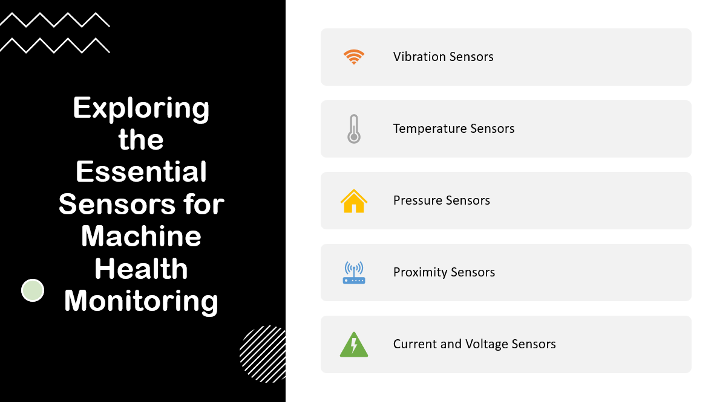
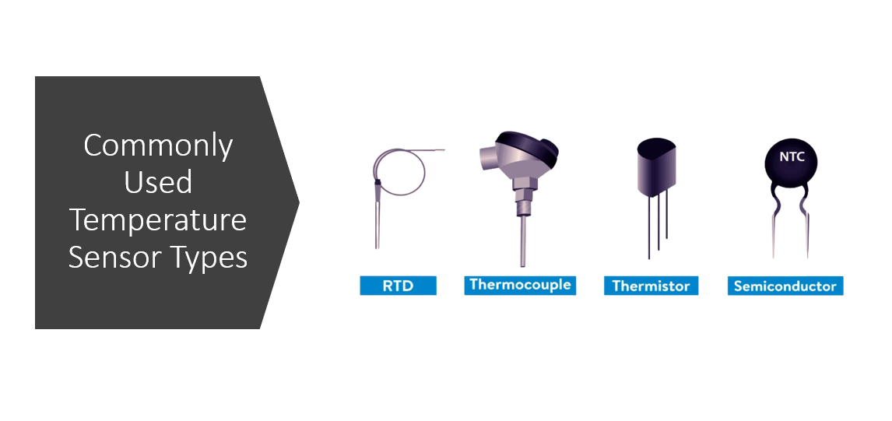
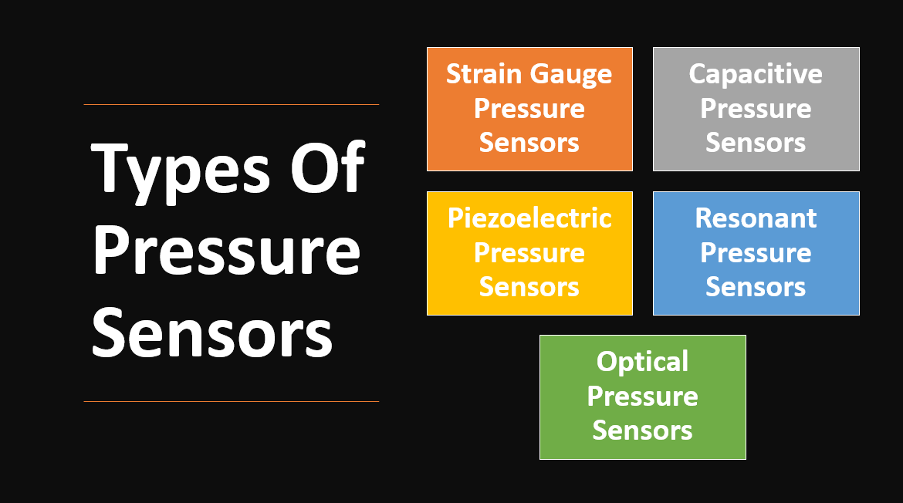
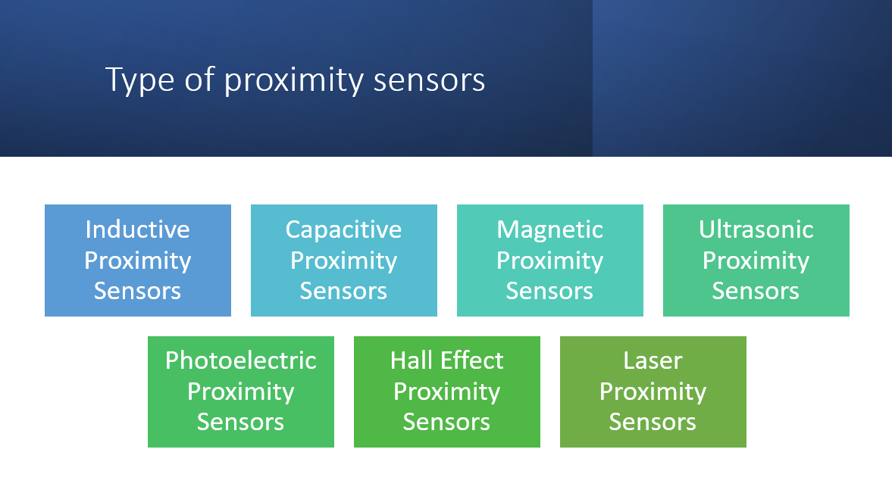
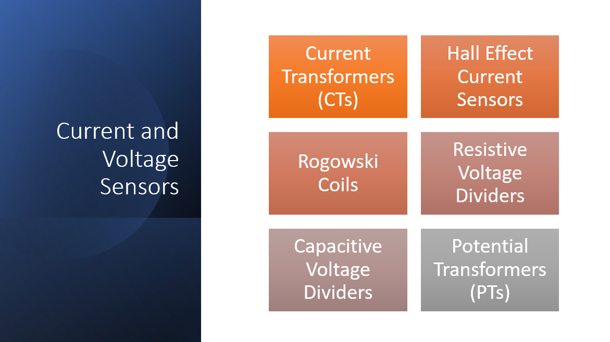

Machine Health Monitoring
Machine health monitoring refers to the systematic process of continuously tracking and assessing the condition and performance of machinery in order to detect and diagnose potential faults or anomalies.
It involves the use of various sensors and monitoring techniques to collect and analyze data related to parameters such as vibration, temperature, pressure, proximity, current, and voltage.
By monitoring the health of machines in real-time, organizations can proactively identify issues, predict potential failures, and implement timely maintenance or corrective actions.
Benefits of Monitoring Machine Health
Below are some of the benefits of Monitoring Machine Health:
Early Fault Detection: Monitoring machine health allows for the early detection of faults and anomalies before they develop into major issues or lead to catastrophic failures.
Predictive Maintenance: By continuously monitoring machine health, patterns and trends can be analyzed to predict maintenance needs.
Increased Equipment Lifespan: Regular monitoring and timely maintenance based on machine health data can extend the lifespan of equipment.
Cost Savings: Monitoring machine health helps optimize maintenance efforts and reduces overall maintenance costs.
Improved Efficiency and Productivity: Well-maintained machines operate more efficiently, leading to increased productivity.
Enhanced Safety: Faulty machinery poses safety risks to operators and personnel. Monitoring machine health ensures that potential hazards are detected and addressed promptly, mitigating the risk of accidents or injuries in the workplace.
Data-Driven Decision Making: Machine health data provides valuable insights into equipment performance, enabling data-driven decision making.
Regulatory Compliance: Monitoring machine health is often necessary to comply with industry regulations and standards.
Role of sensors in machine health monitoring
Sensors play a critical role in machine health monitoring by acting as the eyes and ears of the system.
They collect real-time data on various parameters such as vibration, temperature, pressure, proximity, current, and voltage, providing valuable insights into the condition and performance of machinery.
The data captured by sensors forms the foundation for data-driven decision making, enabling organizations to take proactive measures to prevent failures, reduce downtime, optimize maintenance activities, and ensure the overall health and reliability of their machines.
Below are some of the essential sensors for Machine Health Monitoring:

Vibration Sensors
Vibration sensors, also known as accelerometers, are devices used to measure and monitor vibrations in machinery and structures.
They play a crucial role in machine health monitoring by detecting and analyzing vibrations, which can indicate potential faults, imbalance, misalignment, or wear in the equipment.
Types of Vibration Sensors
There are different types of vibration sensors, including:
Piezoelectric accelerometers: Piezoelectric accelerometers utilize a piezoelectric material that generates an electrical charge when subjected to mechanical stress
Capacitive Accelerometers: Capacitive accelerometers measure changes in capacitance as the mass moves
MEMS (Micro-Electro-Mechanical Systems) accelerometers: MEMS accelerometers use micro-scale mechanical structures to measure acceleration.
Vibration sensors can be attached to specific locations on a machine or mounted on a structure to capture vibrations transmitted through the equipment.
The collected vibration data is then processed and analyzed using specialized software and algorithms. By analyzing the frequency, amplitude, and patterns of vibrations, engineers and maintenance professionals can identify potential issues such as bearing wear, misalignment, unbalance, shaft damage, or resonance.
Benefits of using vibration sensors
Vibration sensors help in machine health monitoring, in following ways:
- Early detection of faults and abnormalities.
- Improved reliability and lifespan of equipment.
- Enables predictive maintenance strategies.
- Minimizes downtime and unplanned interruptions.
- Enhances safety for operators and personnel.
- Optimizes performance and energy efficiency.
- Reduces maintenance and repair costs.
- Improves product quality and consistency.
- Facilitates data-driven decision making.
- Provides long-term monitoring of equipment health.
Applications and examples of using vibration Sensors
Vibration sensors are invaluable tools in machine health monitoring, offering a wide range of applications for detecting faults and abnormalities in various types of machinery.
By capturing and analyzing vibration data, these sensors enable early fault detection, allowing for timely maintenance and the prevention of catastrophic failures.
Following are some of the Applications and examples of using vibration sensors for detecting faults:
- Detecting bearing faults in rotating machinery such as motors, pumps, and turbines.
- Identifying unbalance or misalignment issues in rotating components.
- Monitoring gear faults and tooth wear in gearboxes.
- Detecting faults in rotating shafts, such as cracks or excessive bending.
- Identifying resonance and structural issues in large-scale machinery.
- Monitoring the condition of rotating fans and blowers.
- Detecting faults in roller bearings used in conveyor systems.
- Monitoring the health of vibrating screens and sieves.
- Identifying faults in reciprocating machinery, such as piston engines or compressors.
- Detecting faults in hydraulic systems, such as cavitation or valve issues.
- Monitoring the condition of rotating parts in wind turbines.
- Identifying faults in rotating equipment used in manufacturing processes, such as motors, pumps, and agitators.
Temperature Sensors
Temperature sensors are devices used to measure and monitor the temperature of objects or environments.
Temperature sensors play a critical role in various industries, ranging from manufacturing and HVAC to healthcare and automotive.
Principles and Technologies
Temperature sensors work based on different principles and technologies to accurately measure temperature.

Here are some of the commonly used temperature sensor types and their principles:
Thermocouples: Thermocouples utilize the principle of the Seebeck effect, which states that when two dissimilar metals are joined at two different temperatures, a voltage is generated. This voltage is directly proportional to the temperature difference, allowing the measurement of temperature. Thermocouples are known for their ruggedness, wide temperature range, and fast response times.
Resistance Temperature Detectors (RTDs): RTDs are based on the principle of the change in electrical resistance with temperature. They typically use platinum as the sensing element due to its linear and stable resistance-temperature relationship. As the temperature changes, the electrical resistance of the RTD changes proportionally, enabling accurate temperature measurement.
Thermistors: Thermistors are semiconductor devices whose electrical resistance changes significantly with temperature. They exhibit a nonlinear resistance-temperature relationship, which can be either negative temperature coefficient (NTC) or positive temperature coefficient (PTC). Thermistors are often used for precise temperature measurements in a limited temperature range.
Infrared (IR) Sensors: Infrared temperature sensors detect and measure the thermal radiation emitted by an object. They work based on the Stefan-Boltzmann law, which states that the intensity of thermal radiation is directly proportional to the fourth power of the object's absolute temperature. IR sensors can provide non-contact temperature measurements and are suitable for applications where physical contact is not desirable or feasible.
Semiconductor-based Sensors: Semiconductor temperature sensors, such as integrated circuit (IC) temperature sensors, use the temperature-dependent properties of semiconductors to measure temperature. These sensors rely on the change in voltage or current with temperature and often have digital outputs, making them convenient for integration into electronic systems.
Significance in Machine Health Monitoring
Temperature sensors play a significant role in machine health monitoring for several reasons:
Early Fault Detection: Temperature sensors can detect abnormal temperature variations, which can indicate potential faults or malfunctions in machinery. Sudden increases or decreases in temperature beyond predefined thresholds can be indicative of issues like overheating, inadequate cooling, or improper lubrication.
Equipment Performance Optimization: Temperature sensors provide valuable data for optimizing equipment performance. By monitoring temperatures at critical points, such as bearings, motors, or electronic components, deviations from expected operating ranges can be identified. Adjustments can then be made to ensure optimal performance, energy efficiency, and longevity of the machinery.
Predictive Maintenance: Temperature trends captured by sensors can be analyzed to predict maintenance needs. Monitoring the temperature patterns over time allows for the identification of gradual changes or deterioration, which may indicate the need for maintenance or component replacement.
Safety and Risk Mitigation: Temperature sensors help mitigate safety risks associated with machinery. By monitoring temperatures in critical areas, such as overheating of electrical components or excessive temperature in industrial processes, potential hazards can be detected early on. This enables operators and maintenance personnel to take timely actions, preventing accidents, fires, or damage to the equipment.
Compliance with Regulations: Many industries have specific temperature requirements and safety standards that need to be met. Temperature sensors facilitate compliance by continuously monitoring and ensuring that temperatures stay within the defined limits.
Data-Driven Decision Making: Temperature data collected by sensors forms a crucial part of the overall machine health monitoring system. By analyzing temperature trends, patterns, and correlations with other sensor data, organizations can make data-driven decisions regarding maintenance schedules, operational adjustments, and process improvements. This leads to more efficient and informed decision-making, optimizing the overall equipment effectiveness and operational performance.
Use cases
Bellow are some of the relevant use cases for Temperature sensors, when used for Machine Monitoring:
- Overheating detection in electrical components and machinery.
- Monitoring cooling system performance and detecting anomalies.
- Preventing thermal runaway in batteries and electrical devices.
- Monitoring critical process temperatures for abnormalities.
- Early detection of fires through temperature spikes.
- Ensuring temperature integrity in the cold chain for perishable goods.
- Monitoring and optimizing HVAC system performance.
Pressure Sensors
Pressure sensors are devices used to measure and monitor the pressure of gases or liquids in various applications.
Pressure sensors play a crucial role in industries such as manufacturing, automotive, aerospace, and healthcare.
Pressure sensors operate based on different principles and technologies to accurately measure pressure.
Pressure Sensors and Operation

Here is an explanation of pressure sensors and their general operation:
Strain Gauge Pressure Sensors: These sensors utilize the principle of the piezoresistive effect. They consist of a thin metal strain gauge attached to a flexible diaphragm. When pressure is applied to the diaphragm, it deflects, causing strain on the gauge. This strain changes the electrical resistance of the gauge, which can be measured and converted into a pressure reading.
Capacitive Pressure Sensors: Capacitive pressure sensors use the principle of changes in capacitance with pressure. They typically consist of two parallel plates, with one fixed and the other movable. When pressure is applied, the movable plate deflects, altering the distance between the plates and changing the capacitance. The change in capacitance is then measured and correlated to the applied pressure.
Piezoelectric Pressure Sensors: These sensors utilize the piezoelectric effect, which generates an electric charge when certain materials are subjected to mechanical stress. A piezoelectric material, such as quartz, is used to measure pressure. When pressure is applied to the material, it generates a voltage proportional to the applied pressure, allowing for pressure measurement.
Resonant Pressure Sensors: Resonant pressure sensors operate based on the principle of changes in the resonant frequency with pressure. They consist of a pressure-sensitive diaphragm and a vibrating element. As pressure is applied to the diaphragm, it changes the natural frequency of the vibrating element. The shift in frequency is detected and correlated to the applied pressure.
Optical Pressure Sensors: Optical pressure sensors use the principle of changes in light intensity or reflection with pressure. They utilize fiber optic technology or optical interferometry to measure pressure variations. The pressure-induced changes in light properties are detected and converted into pressure readings.
Pressure Sensors in Machine Health Monitoring
Pressure sensors play a vital role in machine health monitoring for several reasons:
Fault Detection: Pressure sensors can detect abnormal pressure variations that indicate potential faults or malfunctions in machinery. Sudden pressure changes or deviations from expected pressure ranges can be indicative of issues like leaks, blockages, pump failures, or system malfunctions. Detecting these anomalies early allows for timely investigation and preventive maintenance to avoid equipment failure.
Lubrication Monitoring: Pressure sensors are often used to monitor and ensure proper lubrication in machinery. They measure the oil or fluid pressure in lubrication systems, ensuring that the lubricant is being delivered at the required pressure and flow rate to critical components. Inadequate lubrication can result in excessive friction, wear, and premature failure of bearings, gears, and other moving parts. By monitoring lubrication pressure, potential lubrication issues can be identified and addressed.
Hydraulic System Monitoring: Pressure sensors are essential in monitoring hydraulic systems commonly found in heavy machinery, industrial equipment, and vehicles. They measure hydraulic pressure levels, ensuring that the system operates within the optimal range. Abnormal pressure spikes, drops, or fluctuations can indicate issues like valve malfunctions, pump failures, or leaks in the hydraulic system. Detecting these anomalies helps prevent system damage and optimizes performance.
Safety Monitoring: Pressure sensors are crucial for ensuring the safety of machines and operators. They can monitor pressure levels in systems or components to prevent overpressure situations that could lead to catastrophic failures or accidents. Pressure sensors are commonly used in applications such as boilers, pressure vessels, and pneumatic systems to maintain safe operating conditions and prevent the risk of explosions or equipment damage.
Process Control: Pressure sensors are employed in various industrial processes to monitor and control pressure levels. They help maintain consistent and desired pressures in systems such as air compressors, gas pipelines, chemical reactors, and pneumatic conveying systems. Accurate pressure control ensures optimal process performance, product quality, and safety.
Energy Efficiency: Pressure sensors contribute to energy efficiency by optimizing system operations. They help maintain the required pressure levels without unnecessary energy consumption. By monitoring and controlling pressure, energy-intensive components like pumps, compressors, and fans can be operated at optimal pressure conditions, reducing energy waste and operating costs.
Data-Driven Maintenance: Pressure sensor data is valuable for implementing data-driven maintenance strategies. By continuously monitoring pressure levels and analyzing trends over time, maintenance professionals can identify patterns, anomalies, or deviations that may indicate the need for maintenance or component replacement. This enables proactive and predictive maintenance, reducing unplanned downtime and optimizing maintenance schedules.
Examples of pressure sensors for identifying malfunctions or leaks
- Differential pressure sensors for detecting airflow restrictions or filter clogging in HVAC systems.
- Pressure transducers for monitoring hydraulic system pressure in heavy machinery.
- Vacuum pressure sensors for identifying leaks in vacuum systems or packaging processes.
- Tire pressure sensors in automotive applications to alert for low tire pressure.
- Pressure switches in water supply systems to detect leaks or abnormal pressure variations.
- Fuel rail pressure sensors in automotive engines to identify fuel system malfunctions.
- Barometric pressure sensors for monitoring atmospheric pressure changes in weather forecasting or altitude measurement systems.
Proximity Sensors
Proximity sensors are devices used to detect the presence or absence of objects within a certain range without making physical contact.
Proximity sensors are widely used in automation, robotics, security systems, and industrial applications.
Proximity sensors operate based on various principles, including electromagnetic, capacitive, inductive, and optical.

Proximity Sensors Functioning
The functioning of proximity sensors involves emitting a signal, such as an electromagnetic field or light beam, and measuring the changes in the signal caused by the presence of an object. When an object enters the sensor's detection range, it alters the signal, which is then detected and processed by the sensor. The sensor then provides an output signal or triggers an action based on the detected presence or absence of the object.
Electromagnetic Proximity Sensors: These sensors work by generating an electromagnetic field and detecting changes in the field when an object enters the sensing range. They can detect both ferrous and non-ferrous materials and are commonly used in applications such as metal detection and object positioning.
Capacitive Proximity Sensors: Capacitive sensors detect changes in capacitance when an object enters the sensing field. They are effective in detecting conductive and non-conductive materials and are commonly used for level sensing, object detection in non-metallic environments, and touch-sensitive applications.
Inductive Proximity Sensors: Inductive sensors generate an electromagnetic field and detect changes in the field caused by the presence of conductive materials. They are primarily used for detecting metal objects and are commonly found in industrial automation, machine assembly, and proximity switch applications.
Optical Proximity Sensors: Optical sensors use light-based technology to detect the presence or absence of objects. They employ various methods such as reflection, interruption of a light beam, or changes in light intensity to sense objects. Optical proximity sensors are widely used in robotics, assembly lines, and object detection applications.
Proximity sensors in machine health monitoring
Proximity sensors play a significant role in machine health monitoring for several reasons:
Object Detection: Proximity sensors are used to detect the presence or absence of specific components or objects within a machine. By monitoring the position and movement of critical parts, proximity sensors can identify anomalies such as misalignment, missing components, or foreign objects that could lead to equipment malfunction or damage.
Wear and Tear Monitoring: Proximity sensors can be used to monitor the wear and tear of machine components. By detecting changes in the proximity or position of moving parts, such as shafts or gears, sensors can provide early indications of excessive play, alignment issues, or component deterioration. Timely detection of such issues enables proactive maintenance and helps prevent further damage.
Misalignment Detection: Proximity sensors can identify misalignment between machine parts by monitoring their relative positions. Misalignment can cause excessive vibration, increased friction, and accelerated wear, leading to decreased performance and potential breakdowns. By detecting and alerting operators or control systems about misalignment, proactive measures can be taken to rectify the issue and avoid further damage.
Condition Monitoring: Proximity sensors are used in condition monitoring systems to track the movement and vibration of machine components. By continuously monitoring the position, displacement, or vibration characteristics, they can identify deviations from normal operating conditions. These deviations may indicate faults, such as imbalance, looseness, or bearing wear, allowing for timely maintenance actions and preventing catastrophic failures.
Safety Monitoring: Proximity sensors contribute to machine safety by detecting the presence of operators or objects in hazardous areas. They are used in safety systems, such as interlock devices or machine guards, to ensure that machines do not operate when a person or object is in the proximity zone, reducing the risk of accidents or injuries.
Control and Feedback Systems: Proximity sensors provide crucial feedback to control systems, enabling real-time adjustments and monitoring of machine operations. They are used to regulate the position, speed, and movement of machine components, ensuring precise control and maintaining optimal performance.
Predictive Maintenance: Proximity sensors, when integrated into machine health monitoring systems, provide data for predictive maintenance analysis. By continuously monitoring the proximity or position of critical components, they contribute to the collection of data for trend analysis and predictive maintenance algorithms. This enables organizations to optimize maintenance schedules, reduce downtime, and extend the lifespan of equipment.
Applications of Proximity Sensors
- Object detection in automation and robotics
- Safety systems and machine guarding
- Industrial equipment for position and movement monitoring
- Automotive applications like parking assistance and collision avoidance
- Liquid level sensing in tanks and containers
- Elevators and escalators for passenger detection
- Packaging and material handling for position control
- Door and gate control systems
- Vending machines for product detection
- Proximity switches for position sensing in machinery
- Mobile devices for proximity-based features (e.g., automatic screen dimming)
- Presence detection in smart home systems
- Touchless interfaces for interactive displays
- Security systems for intruder detection
- Traffic monitoring and vehicle detection systems
Current and Voltage Sensors

Current Sensors
Current sensors are devices used to measure the flow of electric current in a circuit. They provide information about the magnitude and direction of current. There are several types of current sensors, including Hall effect sensors, Rogowski coils, and current transformers.
Types of Current Sensors
Hall Effect Sensors: Hall effect current sensors use the principle of the Hall effect, which states that when a current-carrying conductor is placed in a magnetic field, a voltage is generated perpendicular to both the current and magnetic field. This voltage is proportional to the current being measured. Hall effect sensors consist of a Hall effect element, which is a semiconductor material, and a magnetic field source. When current passes through the conductor, it creates a magnetic field, and the Hall effect sensor measures the resulting voltage to determine the current magnitude.
Rogowski Coils: Rogowski coils are flexible coils without a magnetic core. They are used to measure alternating currents. Rogowski coils operate based on the principle of electromagnetic induction. When an alternating current flows through the conductor enclosed by the coil, it induces a voltage across the coil. By measuring this voltage, the magnitude and waveform of the current can be determined.
Current Transformers: Current transformers (CTs) are widely used to measure high currents in power systems. They consist of a primary winding through which the current to be measured flows and a secondary winding that is connected to the measurement instrument. Current transformers work based on the principle of magnetic induction. The primary winding creates a magnetic field, which induces a current in the secondary winding proportional to the primary current. The secondary current is then measured to determine the primary current magnitude.
Voltage Sensors
Voltage sensors are devices used to measure the electrical potential difference or voltage across a circuit or component. They provide information about the voltage magnitude and can be used for monitoring, control, and protection purposes.
Types of Voltage Sensors
Resistive Voltage Dividers: Resistive voltage dividers, also known as voltage dividers or voltage dividers, use a series of resistors to divide the voltage across a circuit. By selecting appropriate resistor values, the voltage can be scaled down to a level suitable for measurement by an analog or digital device.
Capacitive Voltage Dividers: Capacitive voltage dividers utilize capacitors to divide the voltage across a circuit. Capacitors have the property of voltage division based on their capacitance values. Capacitive voltage dividers are commonly used for high-frequency applications and provide galvanic isolation between the measured circuit and the measuring device.
Potential Transformers: Potential transformers (PTs) are used to step down high voltage to a lower, measurable level. They operate on the same principle as current transformers, using the principle of magnetic induction. A primary winding is connected to the high-voltage circuit, and a secondary winding is connected to the measuring instrument. The secondary voltage is proportional to the primary voltage but at a reduced magnitude.
Conclusion
Recap of the importance of sensors in machine health monitoring
Sensors play a crucial role in machine health monitoring for several reasons:
- Early Fault Detection: Sensors enable the early detection of faults and abnormalities in machine components, helping to prevent major failures and reduce downtime.
- Proactive Maintenance: Sensor data allows for proactive maintenance strategies by indicating when maintenance or replacement is required for critical machine parts.
- Enhanced Safety: Sensors contribute to machine safety by monitoring parameters and triggering alarms or shutdowns in the event of hazardous conditions or abnormal behavior.
- Improved Efficiency: Machine health monitoring through sensors optimizes machine performance, energy efficiency, and resource allocation by identifying inefficiencies and misalignments.
- Data-Driven Decision Making: Sensors provide valuable data for analysis, enabling data-driven decision making in maintenance schedules, operational improvements, and resource allocation.
- Remote Monitoring and Predictive Maintenance: Sensors facilitate remote monitoring and diagnostics, enabling proactive and predictive maintenance strategies to reduce unplanned downtime.
- Optimization of Operations: Sensor data helps optimize machine operations, extend equipment lifespan, and ensure the smooth and reliable operation of industrial systems.
Future of sensor technology in enhancing machine health monitoring
Sensor technology is rapidly advancing, and its future holds tremendous potential for enhancing machine health monitoring. Here are some final thoughts on the future of sensor technology in this field:
Miniaturization and Integration: Sensors will continue to become smaller, more compact, and capable of integrating multiple sensing functions into a single device. This trend will enable easier installation, greater flexibility, and cost-effective deployment of sensors in various machine monitoring applications.
Wireless and IoT Connectivity: Wireless connectivity and the Internet of Things (IoT) will play a significant role in the future of sensor technology. Sensors will be able to communicate wirelessly, allowing for real-time data transmission and remote monitoring of machine health. This connectivity will enable seamless integration with data analytics platforms and cloud-based systems for advanced monitoring and analysis.
Advanced Data Analytics: Sensor data will be leveraged more effectively through advanced data analytics techniques such as machine learning and artificial intelligence. These technologies will enable the identification of complex patterns, anomalies, and predictive models for more accurate and proactive machine health monitoring. Predictive maintenance algorithms will continuously improve, optimizing maintenance schedules and reducing downtime.
Multi-Sensor Fusion: The integration and fusion of data from multiple sensors will become more prevalent. By combining data from various sensors, such as vibration, temperature, pressure, and proximity, a more comprehensive and holistic view of machine health can be obtained. This multi-sensor fusion will enhance fault detection capabilities and provide deeper insights into the performance and condition of machines.
Real-Time Monitoring and Control: Sensors will enable real-time monitoring and control of machine health parameters. Automated systems will use sensor data to make instant adjustments and optimize machine operations, reducing the risk of failures and maximizing efficiency. Real-time alerts and notifications will empower maintenance teams to respond promptly to critical issues.
Energy Harvesting and Self-Powered Sensors: Energy harvesting technologies, such as solar or kinetic energy, will enable self-powered sensors. These sensors will eliminate the need for batteries or external power sources, making them more sustainable and suitable for remote or hard-to-reach locations. Self-powered sensors will expand the scope of machine health monitoring possibilities.